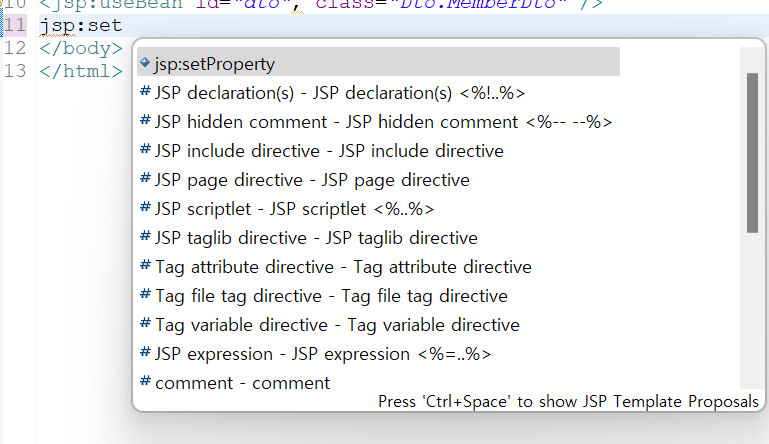
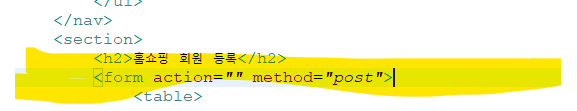
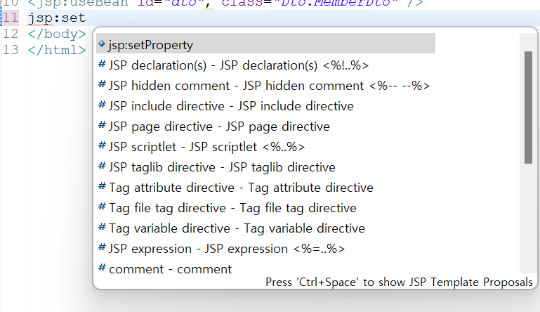

joinproc 는 회원등록 사이트에서 클릭 할 시 일어나게 되는 사이트이다.(버튼을 누를시 등록되게 되는 사이트)
usebean,setproperty 만들어주자.


request.set 어쩌고는 UTF-8 로 잡아주어 Dto 가 잘 찍히는지나오게 해준다. 대강 dto 찍어보자.
대강 이런식으로 잘 찍히면 성공이다.
1. 문제부터 보자
이제 조금 어려워진다.
2. html 작업
다음은 section 안의 내용이다.
h2 로 잡아주고 table 안에 tr,td 작업 좀 해주면 끝이다.
form 안에 넣어주는거 잊지말자!
그리고 method를 post 로 잡아준다.

조금의 css 처리는 해주자.
다음은 form 부분이 post 로 action 처리가 되었을 시 발생하게 되는 부분이다.
form action 부분은 본인 자유긴 하지만 그냥 따라하는게 좋을거다.
다음으로 form action 부분 잡아주도록 하자.
테스트로 잘 되는지는 확인해보자.
3. input 태그 name 달아주기 및 DB 확인.
지금부터 해야 할 건 DB 확인 후 input 태그 name 달아주기다.
회원정보 내용은 member_tbl_02 에 있다.
cmd 로 확인 후 input 태그 name 달아주자.
4. 자바 DTO,DAO 만들기
설명은 생략. 알아서 만드세요.
이 후 dto 에 name 달아준것 private 작업및 알아서 하면된다.
5. joinproc 작업하기.
joinproc 는 회원등록 사이트에서 클릭 할 시 일어나게 되는 사이트이다.(버튼을 누를시 등록되게 되는 사이트)
usebean,setproperty 만들어주자.

request.set 어쩌고는 UTF-8 로 잡아주어 Dto 가 잘 찍히는지나오게 해준다.
대강 dto 찍어보자.
대강 이런식으로 잘 찍히면 성공이다.